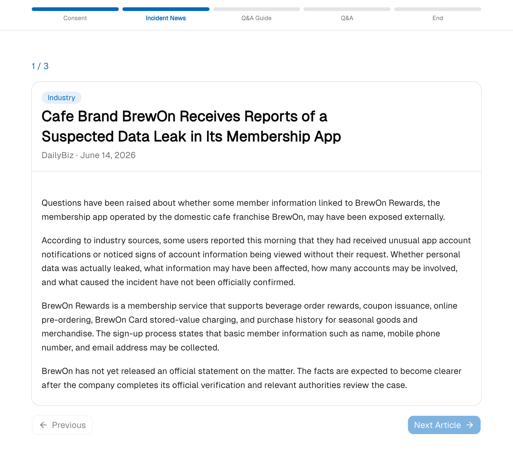
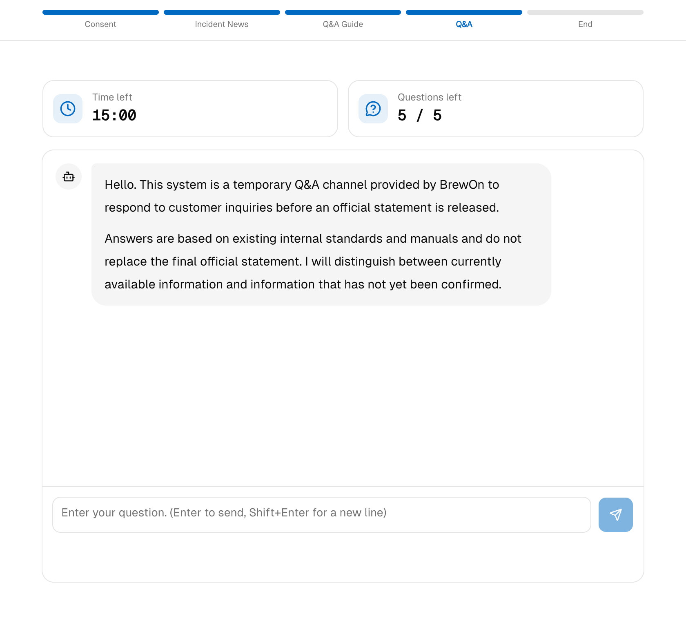

LLM-Based Interactive Q&A in Crisis Communication
How should AI respond when a crisis unfolds before the facts are clear?
- Status
- Stimulus & measure refinement
- Period
- Dec. 2025–present
- Role
- First author
- Advisor
- Prof. Changjun Lee
Overview
When a crisis unfolds, people may need answers before an organization has verified all the facts. This project explores how AI-mediated communication shapes people’s judgments in that uncertain period. An initial pilot examined AI spokespersons, moral judgment, and responsibility attribution; the current study focuses on interactive Q&A before an official response.
Exploratory pilot
In an unpublished, 20-participant exploratory pilot, participants encountered news about a fictional data breach and interacted with an AI spokesperson. We examined perceived humanlikeness, moral judgment, and responsibility attribution, comparing interfaces with and without a humanlike profile image.
Preliminary findings
Exploratory analyses suggested an indirect association between perceived humanlikeness and responsibility attribution through moral judgment. The direct association and the profile image’s moderating role were not statistically significant. These findings are preliminary given the small sample, and do not establish a causal pathway.
Current journal study
The journal-oriented study shifts the focus from how an AI spokesperson is perceived to how its responses address people’s needs during an information vacuum. It examines how practical guidance and acknowledgment of people’s concerns relate to perceived organizational responsiveness, emotional relief, and readiness to engage with later official communication.
Approach
The study uses a fictional suspected data-breach scenario and an interactive Q&A prototype. The planned experiment compares the emphasis of response content and people’s direct or indirect involvement in the incident. Across conditions, the Q&A is designed to distinguish available information from unconfirmed facts while providing a shared baseline of essential guidance.
Prototype screens


My contribution
As first author, I am developing the journal study’s research and experimental design and refining the interaction stimuli and measurement items.
Journal study in development. Experimental stimuli and measurement items are being refined before the next study.